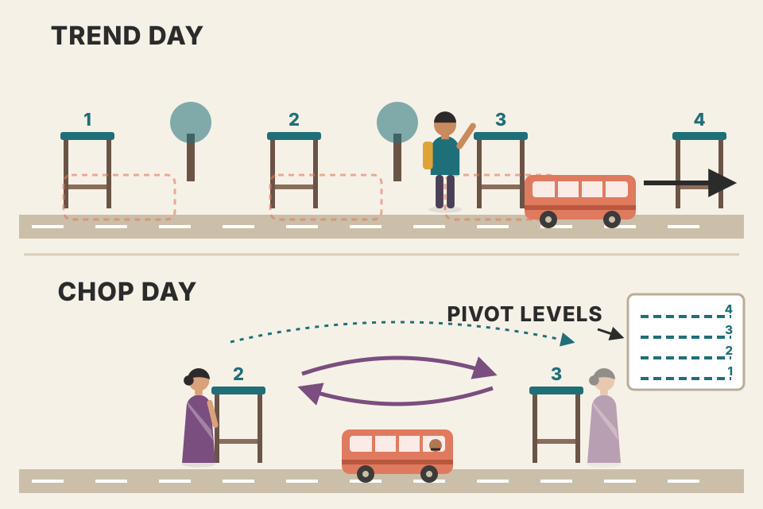
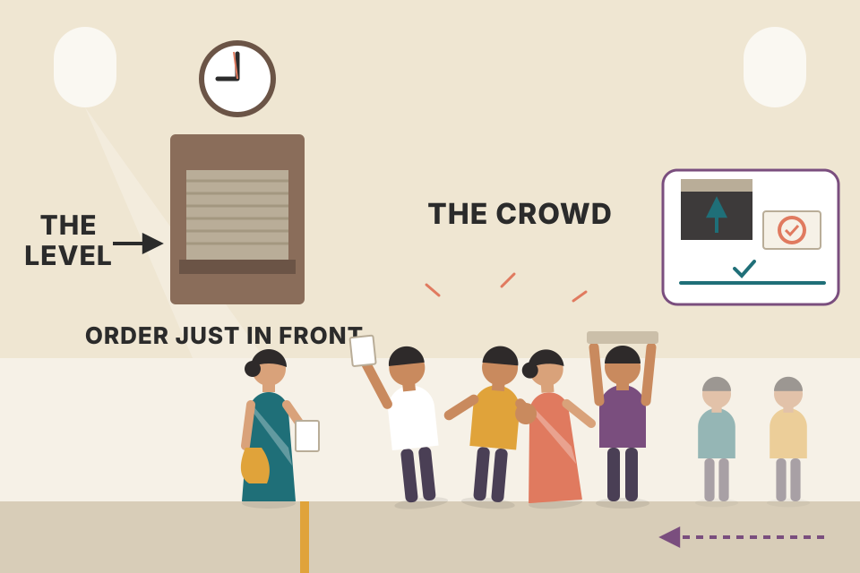
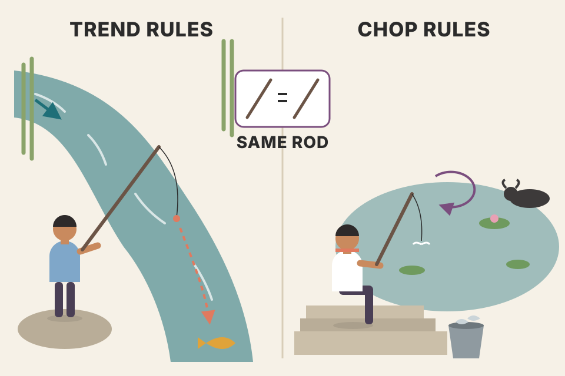
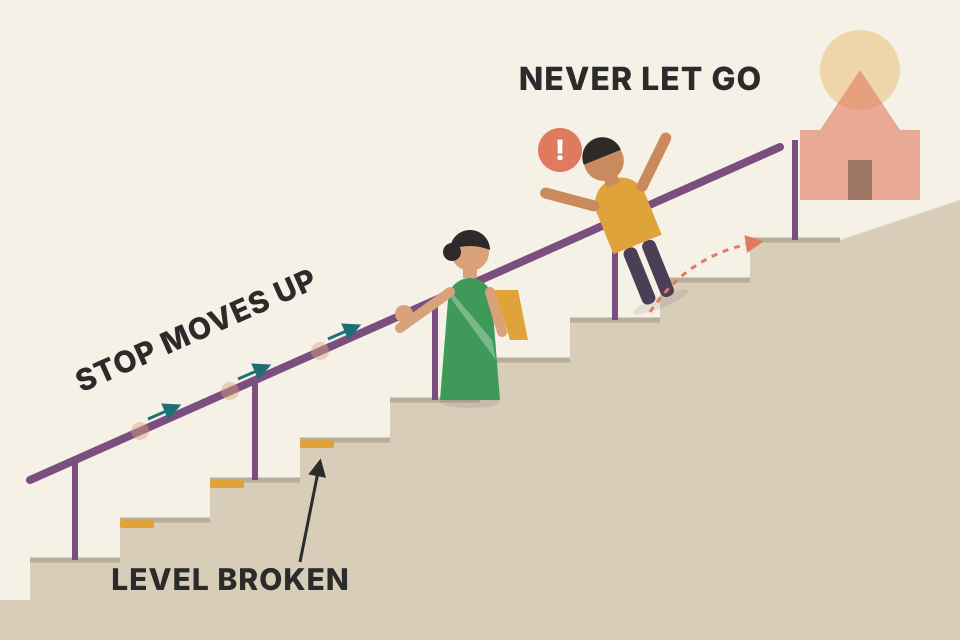

John F. Carter · Mastering the Trade, 3rd ed. · Chapter 8 · pdf p184–213
Pivot points: pause on trend days, fade on chop days
Carter's second setup. Before the open he computes a ladder of price levels from yesterday's high, low and close (plus last week's and last month's), and then trades only at those levels with resting limit orders, fixed stops and two targets. On a trending day he buys the first pullback to a level the market has just broken; on a choppy day he fades every touch. This page walks the whole chapter in the book's order: why price beats indicators, the formula, how to set the levels up, why they work, the eleven rules, every worked trade, chop days, stop management, tips, Fibonacci clusters and commodities. Every chart uses simulated prices. Where a chart replays one of Carter's trades, the order prices are his and the bar-by-bar path is simulated.
market #1 · re-rolls the simulated paths and pooled tests, never the book's numbers
How the chapter fits together
read this first
The chapter builds one complete system. First the idea (trade levels you know in advance, not indicator signals), then the levels themselves, then why they hold, then the rules for the two kinds of day, then many worked trades, then refinements.
IdeaIndicators lag→Price levels known before the open→Orders do the work; discipline is built in
Day typeTrend: break a level, pause 15–20 min, continueChop: touch a level, drift backTest: ES 5-min volume after 10 a.m. vs 25,000
LevelsP = (H + L + C) ÷ 3→R1–R3, S1–S3→daily midpoints + weekly + monthlysettlement close, correct session
OddsDaily pivot tested ~90% of daysR2/S2 usually the day's extremeR3/S3 rare → fade
WhyFloor locals trade level to level→late indicator traders chase→their stops fuel the next leg
RulesLimit orders "just in front"fixed stop (20 YM / 2 ES / 4 NQ / 1.50 TF)½ at next level, ½ at the one afterstop to entry level only after target 1two losers → done
ExtrasMidpoints only if levels ≥ 30–40 YM apartFibonacci clustersWeekly pivots for commodities
01 · WHAT IS THE BEST WAY TO BEAT INDICATOR-BASED TRADERS?
Trade levels you know before the open
pdf p184–185
Carter calls his levels multipivot levels: the daily, weekly and monthly pivot points, plus the midpoints between the daily levels. Where he uses them:
Mainly on the stock index futures (mini Dow YM, E-mini S&P ES, E-mini Nasdaq NQ, Russell TF).
Also on some big-name individual stocks, and on the index ETFs DIA, SPY, QQQ and IWM.
On most other futures (gold, currencies, oil and so on) he uses the weekly pivots. They are proving useful on actively traded crypto such as Bitcoin and Ethereum too. Daily pivots on these markets are "okay", but the weekly levels hold much better.
Like the gap play, the setup has hardly changed since the first edition, so he kept the original examples.
The core argument: the system is price-based, not indicator-based. By the time an indicator flashes buy or sell, the move is well under way. A pivot trader is already in, and usually hands the position over to the indicator traders (stochastics and other oscillators) just as their signal fires. This is strongest on choppy days: there, indicator buy signals arrive at the top and sell signals at the bottom, so those traders bleed, and the pivots are built to collect what they lose.
Two side benefits: it suits people who can't watch screens all day, and people who chase. Entries and exits are fixed before the day starts, so the discipline is built in.
Telling the day type. On a trending day the market runs to a pivot, consolidates there for 15 to 20 minutes, then carries on in the trend's direction; Carter waits for the break and buys the first pullback to the broken level. On a choppy day the market reaches a level, hangs around briefly, then drifts back where it came from; the pivots are made to be faded on those days, one of the few profitable ways to trade low-volume, narrow-range chop. Two quick tests:
Watch how price reacts when it reaches the levels.
Put up a 5-minute E-mini S&P chart and look at volume after 10:00 a.m. eastern (see Chapter 5). More than 25,000 contracts per bar: power and volatility, usually a wide-range trend day. Consistently below 25,000: a slow, choppy day.
On a trend day he waits for the break and sets an order for the first retracement. On a chop day he leaves standing buy and sell orders against the pivots and lets them work (he goes to the driving range). Bonus play on a chop day: an extreme $TICK reading (+1,000 or −1,000) arriving right as price hits a key pivot. A rally into a pivot that prints +1,000 $TICK has used up its buyers: that is the short of the day.
Picture it

Bus stops on a road. On a trend day the bus stops at each stop for a moment and then drives on in the same direction; you get on at the stop it just left behind. On a chop day the bus shuttles back and forth between two stops; you get on at one end and off at the other.
Two simulated days against the same pivot ladder
Simulated: the price path, the levels and the volume are generated to show the two behaviours Carter describes. The 25,000 line is his ES threshold; the simulated volume is built to sit above it on the trend day and below it on the chop day, so the test "works" here by construction.
What's happening behind it
An indicator is a function of past prices, so it can only confirm a move after part of it has happened. A pivot level is fixed before the open, so an order resting there is filled at the turn, not after it. On a trending day, volume (real money) is what carries price through a level; a level that breaks on heavy volume and then gets retested is where late sellers give up. On a choppy day nobody is pushing, price wanders between levels, and a level acts like a wall that it bounces off.
Connects to
Ch.7 The Opening Gap: the first pivot play of the day is tied to the gap (rule 2 below). Chapter 5 (not yet on this site) is where the 25,000-contract volume test comes from.
Ch.9 Tick Fades builds the ±1,000 $TICK bonus play into a setup of its own.
Your indicators/trend_vs_sideways_tools.md found that ER, ADX, Choppiness and MA slope do not predict whether the next period trends or chops. Carter's test is different: he classifies today while it happens (volume after 10:00, reaction at levels), not from yesterday.
02 · WHY AREN'T ALL PIVOTS CREATED EQUAL?
The formula, the inputs, and the seven levels
pdf p185–186
Pivots are support and resistance levels that floor traders used to compute with a simple formula. They have long since left the floor, many traders use them, and in Carter's view most use them wrongly. There are several formula variants and several time frames, which adds to the confusion. He uses one of the standard versions:
Inputs: the previous session's high, low and close. He takes the high and low from 24 hours of data, but the close must be the settlement price, "the only closing price that matters". Many charts' "24-hour" setting means midnight to midnight, which ruins the numbers.
Output: seven levels for the next day: a central pivot, three above (R1–R3), three below (S1–S3). The central pivot carries the most weight.
He adds the midpoints between the daily levels, and he wants to know where the weekly and monthly levels are (same formula on the last completed weekly or monthly bar). Daily levels change every day, weekly once a week, monthly once a month.
Indicators can be programmed to draw all this automatically, though doing it by hand makes you remember where the levels are.
It is rare for a stock index to reach R3 or S3, so a rally to R2 or a drop to S2 usually turns out to be the day's dead high or dead low. That's "normal conditions". Writing in September 2011 with the $VIX at 40, he notes the markets were regularly testing R3 and S3. The lower the $VIX, the tighter the ranges.
Picture it
The pivot is yesterday's centre of gravity. R1 and S1 are yesterday's high and low "reflected" around that centre. R2 and S2 are one full yesterday-sized range away from the centre, and R3/S3 one more range beyond R1/S1. You are laying yesterday's ruler on top of today.
Pivot calculator
Fig 8.2 inputs:
What's happening behind it
Write the range as Rg = H − L. Then R1 − P = P − L and P − S1 = H − P: R1 and S1 are the old low and high mirrored through the pivot. If yesterday closed near its high, P is high in the range, so R1 sits close above P and S1 far below (the ladder is lopsided). R2 and S2 sit exactly one range from P, and R3 − R1 = S1 − S3 = one range. So the whole ladder scales with yesterday's range: a wild day gives wide levels; a quiet day gives tight ones. That's why the $VIX matters: when today's volatility is far above yesterday's, today's moves are big compared with the ruler, and R3/S3 get reached more often.
Why the session window matters
Simulated 15-minute prices. The shaded block is the window used for high, low and close. The midnight window misses the evening session's prices and takes its "close" at midnight instead of the 4:15 p.m. settlement, so the pivot moves.
Connects to
Section 03 shows where each input comes from; section 12 has his midpoint rule (only when levels are 30–40+ YM points apart).
Don't confuse these with the "pivots" in your tori_trendlines_explained.md and intraday_swing_playbook.md: there a pivot is a swing point (a 5-bar high or low). Carter's pivot is a calculated level from the prior session's H, L and C.
03 · HOW EXACTLY SHOULD I SET UP THE PIVOTS ON MY CHARTS?
The daily routine, worked on March 21, 2005
pdf p186–191 · Fig 8.1–8.4
The data windows (exchange hours as of September 29, 2017), all eastern time:
YM, ES, NQ: start Wednesday 4:30 p.m., end Thursday 4:15 p.m. TF: start Wednesday 8:00 p.m., end Thursday 6:00 p.m. The different times follow each contract's exchange hours. This captures pre- and post-market trading in the next day's numbers.
The settlement price is the key. Check it at cmegroup.com for YM, ES and NQ; at theice.com for TF. (He notes the CME has re-acquired the Russell contract, which will trade there as RTY.)
Easiest route: a daily chart set to those hours. In TradeStation you enter the continuous symbol (@YM, @ES) on a daily chart and it defaults to the "regular session", which means those hours. Many other packages default to the stock session, 9:30 a.m.–4:00 p.m. eastern, and must be changed by hand.
After the 4:15 p.m. close (6:00 p.m. for TF), read that day's bar. Its close almost always equals the settlement, but he checks. For Monday's levels, use Friday's bar.
Worked example (Fig 8.1). The YM daily bar for Friday, March 18, 2005 ran from the 4:30 p.m. reopen on Thursday, March 17, to 4:15 p.m. Friday: high 10,679, low 10,579, close 10,635. The completed weekly bar: high 10,870, low 10,579, close 10,635. On Monday the daily and weekly close are the same (both are Friday's close), and here the lows match too, because Friday's low was the week's low. Monthly inputs won't change until the first trading day of April.
Step through Carter's arithmetic
step 1 of 6
Then two observations. First, where the daily pivot sits against the close: pivot 10,631, close 10,635. Second, where the market is at 9:30 a.m. Monday and how far that is from the daily pivot, which ties into the gap play. Carter's statistic: the markets test the daily pivot at some point in the day 90% of the time, and he always fades the first move to the daily pivot (trading above it and selling down to it → buy it there). Everything sits in an Excel template: he types H, L, C and the sheet fills the rest for YM, ES, NQ and TF in a few minutes (Fig 8.2 is that sheet: daily levels and midpoints, weekly and monthly pivots for all four).
The extremes, again. Reaching R3 or S3 is very rare, so a run to R2 or S2 is usually the day's end point. Knowing this tames the urge to believe a rally goes on forever or a drop is the end of the world. Greed and its adrenaline are a disaster; knowing the odds lets you take money from the people who panic. His number: a 90% chance the market does not close above R2 or below S2 on a given day. Reaching R2/S2 means take profits, not pyramid.
Figs 8.3 and 8.4 (blank in this PDF copy) show Monday's 5-minute YM chart first with everything on (daily levels labelled on the left, daily midpoints in the middle, weekly levels on the right; monthly left off for space) to see the extremes, then zoomed in to the levels near the close.
The Fig 8.3 / 8.4 view, rebuilt with the book's levels
Levels: daily and weekly from Carter's inputs (computed by the calculator above). The Monday price path is simulated, not the real March 21, 2005 session.
Picture it
A pilot's pre-flight checklist. The numbers are fixed on the ground, before take-off, when nothing is moving and you can think clearly. In the air you only compare what you see with the list.
Beyond the book: how often would a random walk do what Carter describes?
What's happening behind it (beyond the book)
The simulation is mine: 3,000 days of a pure random walk with no memory and nothing special at any level. Yesterday's walk sets H, L, C and the pivots; today's walk starts at yesterday's close plus a random gap. At the default settings the walk touches the pivot on roughly three days in four and closes beyond R2 or S2 on almost one day in five. That's geometry: the pivot sits inside yesterday's range, close to where today starts, and R2/S2 sit a whole range away. Carter's figures (pivot tested 90% of days, about 10% closing beyond R2/S2) are stronger than a random walk gives. Two possible reasons: real index futures may revert to the middle of the range more than a random walk does, or his levels come from the full 24-hour range, which is wider than the day session that prices trade in, so R2/S2 sit farther out. The book gives no sample size or period for either figure, so you can't tell which. Raise the volatility ratio (his $VIX 40 remark) and R3/S3 touches climb fast.
Connects to
Ch.7 uses the same settlement-close idea for the gap, and the same "how far is the 9:30 open from yesterday's close" question.
Your price_physics_basics.md explains why noise grows with √t: the same reason the R2/S2 distance (one daily range) is rarely covered by the close.
04 · THE PSYCHOLOGY BEHIND THE PIVOTS: WHO IS GETTING BURNED?
Floor traders start the move, late traders finish it
pdf p191–192
Why do the levels hold? Carter gives three reasons.
Self-fulfilling. Many traders watch the daily levels. But he points out that Fibonacci levels are watched too and hold far less well, so there must be more to it.
How the pit trades. A floor trader's aim is small moves, typically 2 S&P points (about 20 Dow points), or less. Brokers stand on the top step around the pit; the best spot for a local is just inside the rail in front of them, earned by experience, politics and the ability to take orders of any size, and held for as long as the local keeps making markets. New traders get whatever space is left, usually the centre of the pit, farthest from the brokers. So different parts of the pit trade different stories at once. A broker selling size in one corner and one buying in another may not hear each other. Locals near the buying broker "race" him: they buy from nearby brokers and sell to him. Outside traders get in first, sell to the inner circle who can't see the top steps, and the inner circle, last in, sells to the public; meanwhile the outside traders go short against a public that is chasing. The cycle repeats all day, giving bursts of speed and rest. Pivots are spaced to catch these "patches of momentum": Dow pivots are usually 30 to 50 points apart; the centre traders catch half a move, dump it, and wait for the next level. The trick is to get in while it's quiet, positioned for the next burst.
Inexperienced, indicator-driven traders. Floor traders start a move; the crowd's lateness finishes it. Indicators are only an "indication", and every indicator lags (his analogy: if you need a slap in the face to know your partner is angry, you're watching the wrong indicators). By the time an average trader gets a buy signal, the pivot play is nearly over and the pivot trader sells to them. Their stops then sit there "like trout sunning themselves" for the hawks. The market pauses, drifts down, speeds up through the stops, and pauses again when the run is over, generally at a pivot, where floor traders start building the next position.
The pit and the cycle, step by step
stage 1 of 5
Picture it
A rumour moving through a crowded hall. The people near the door hear it first and act; the people in the middle hear it last and act at the worst moment; and the people outside the hall (the public, reading indicators) act after everyone else, which is exactly when the first group is happy to take the other side.
What's happening behind it
Information arrives unevenly, so the same move is "early" for some traders and "late" for others. Early traders need someone late to sell to; late traders' protective stops then become forced orders that push price the other way. A level everyone can see is where both groups line up, so it's where the turnover happens. Note that the pit described here (2004–05) has mostly gone electronic since; the book still uses these examples. The "late traders and their stops" part doesn't depend on a pit.
Connects to
Ch.2 Psychology 101 and Ch.1: the same "pain trade" idea, where the losers' forced exits move price.
Your order_flow.md: stops are resting orders that turn into market orders, the "force" that moves price (ΔP = λ × net flow).
05 · WHAT ARE THE TRADING RULES FOR PIVOT BUYS ON TRENDING DAYS?
The eleven rules, as an order planner
pdf p192–193
Rules for buys; sells are the mirror image.
Chart: unlike the gap chart, use 24 hours of data so overnight highs and lows show. Update the daily levels every day, the weekly levels on Mondays, the monthly levels on the first trading day of the month.
First play: combine it with the gap if there is one. Gap down → buy a decline into the nearest pivot. If there's no playable gap (more than 10 YM points or 1 ES point), wait until 9:45 a.m. eastern before the first play.
Trend filter: if 5-minute ES volume is above 25,000 contracts, wait for price to break a level and travel at least a quarter of the way to the next level; then bid for the first pullback to the broken level.
Limit orders only, "just in front of" the level: YM 3 points, ES 0.25, NQ 0.50, TF 0.20, stocks 5 cents. Level 10,000 on YM → buy a decline at 10,003, short a rally at 9,997. When the level is an odd number, round in the direction of the trade: ES level 1117.38 → long: round up to 1117.50, bid 1117.75; short: round down to 1117.25, offer 1117.00. Stops and targets are placed "just in front" the same way.
Targets: once filled, an order to take half off at the next level and the other half at the level after that.
Stops: 20 YM, 2 ES, 4 NQ, 1.50 Russell. Stocks by price: under $10 → 20 cents; $10–20 → 30 cents; $20–30 → 40 cents; and 10 cents more for each further $10. (His own illustration says a $75 stock gets an 80-cent stop, though following the steps gives 90 cents; see the planner note.)
After target 1: move the stop to the entry pivot minus the just-in-front amount. YM long at 10,003 off the 10,000 level → new stop 9,997. (The book refers back to "rule 3" here; the amounts are in rule 4.)
Into the close: if neither stop nor target is hit, exit at the market at 4:10 p.m. eastern for futures, 3:58 p.m. for stocks.
No new positions after 3:30 p.m.; manage open ones into the close.
R3 and S3: sustained moves beyond them are rare. If price trades there, always fade it.
Two losers in a row and he's done with pivots for the day.
Picture it

Queueing at a ticket window that you know opens at a set time. Standing exactly at the door means everyone else at the door gets served first. Standing one step in front of where the crowd forms means you're served the moment the window opens, even if the crowd never fully arrives.
Order planner
Presets:
What's happening behind it
"Next level" for a long is the level above the entry level; for a short it's the level below. The planner rounds to the market's tick in the direction of the trade, so you get filled before an order resting exactly on the level, and you exit before the crowd's orders at the next level. The fixed stop is wider than the gap between levels on purpose: it sits outside the normal wobble around a level, so a retest doesn't stop you out. The price you pay is the reward-to-risk shape: risking 20 YM points to make roughly one level-gap on half and two on the other half means you need a high hit rate. The readout shows the break-even win rate for the full plan, assuming every winner reaches both targets (my simplification; the book doesn't compute it).
Connects to
Ch.7 rule 2: a gap down that sells into a pivot is the first pivot buy of the day. The 10 YM / 1 ES "playable gap" size is the same threshold.
Your order_flow.md on limit vs market orders: Carter only ever enters passively (limit), which is why he can't "chase".
Your breakeven_move_fyers.md: an intraday round trip on NSE costs roughly 0.1–0.2% of price. Ten YM points on a 10,000 index is 0.1%, so costs would eat a large slice of a chop-day first target.
06 · WHAT ARE THE TRADING RULES FOR PIVOT BUYS ON CHOPPY DAYS?
Same rules, smaller first target
pdf p193–194
Everything is identical except the targets, and sells are again the mirror image. On chop days he trades only YM and ES. The first target is mechanical: 10 YM points or 1 ES point on half the position. When it's hit, the stop moves up exactly as on a trend day. The second target is "just in front of" the next real pivot level. Traders he works with pick up the choppy-day setup easily but struggle with the trending-day setup, which is why most of his examples are trend days.
Picture it

Two fishermen. One casts toward a fast river and waits for the current to carry the bait to the next bend (trend rules). The other fishes a still pond: small, quick catches, then cast again (chop rules). Same rod, different water.
Beyond the book: both rule sets on simulated trend, chop and random days
What's happening behind it (beyond the book)
The engine is mine and follows the rules as closely as a simulation can: YM units, levels from the simulated prior day (7 levels + midpoints), limit fills when price touches the order, 20-point stop, half at target 1, stop to "level − 3" after target 1, out at the close, no new trades after 3:30, done after two losers in a row. Trending rules bid the pullback to a level the market has closed through and travelled a quarter of the way past; choppy rules rest a buy just above the nearest level below and a sell just below the nearest level above. When a bar touches both stop and target, I assume the stop came first. The table pools 600 days per regime. The chop and trend days are built to mean-revert or drift, so the result that fading pays on chop days and pullback-buying pays on trend days is partly baked in. The useful lessons are the size of the damage when you use the wrong rules on the wrong day, and that on a pure random walk (no edge anywhere) both rule sets lose about the cost. The edge lives in reading the day type correctly, which is why Carter spends so much time on the volume test.
Connects to
Your indicators/trend_vs_sideways_tools.md test found no indicator that predicts tomorrow's regime. Carter needs only today's, read live; the table shows why misreading it is costly.
Your backtest_results_summary.md: the intraday strategies you tested mostly failed on costs (Nifty futures momentum's small edge was eaten by about ₹480 per ₹10L trade). Try the cost slider: chop rules make many small trades and are the first to suffer.
07 · WHAT ARE SOME SPECIFIC EXAMPLES OF TRADING THE PIVOTS? (E-MINI S&P)
Three E-mini S&P days, September 2004
pdf p194–196 · Fig 8.5–8.7
All three are on the September 2004 ES contract, 5-minute charts. Only Fig 8.7 survives in this PDF copy; it labels the daily levels for September 8 (pivot 1120.50, S–P midpoint 1118.50, P–R1 midpoint 1123.38, S1 1116.50). For the other days the replay shows the levels his order prices imply (order ± 0.25), marked "implied". Step through each day.
Sep 10: gap down into S1; a bid at 1114.00 just misses. After the midpoint (1115.88) breaks, he buys the pullback at 1116.25 (stop 1114.25), takes 1117.75 and 1119.75. Two buys at the pivot (1118.25): the first is stopped at 1116.25, the second takes 1119.75 and 1122.00. A final bid at 1122.50 above R1 never fills, and after 3:30 p.m. he stops.
Sep 9: a short at 1121.00 below the midpoint (stop 1123.00) covers at 1120.00 and 1118.00. A short at 1119.25 near the pivot misses. A short at 1117.25 (stop 1119.25) covers at 1116.00 and 1114.25. A short at S1 (1115.25) is stopped when the market rallies hard. A long at 1118.00 (stop 1116.00) exits at 1119.25 and 1121.00. He skips the next pullback buy at 1120.00 because it's past 3:30; it would have been stopped.
Sep 8: a gap-down bid at 1118.75 misses. After the pivot breaks he buys 1120.75 (stop 1118.75): half at 1123.00, then the stop at 1120.25 takes out the rest. The market trends down, so he shorts rallies: 1120.25 (stop 1122.25) covers at 1118.75 and 1116.75; 1118.25 (stop 1120.25) covers half at 1116.75 and the rest is stopped at 1118.75 in a rally into the close.
step 1
Picture it
A lift that stops at every floor. Carter gets on when the doors open at a floor the lift has just passed (the pullback) and gets off at the next floor and the one after. If the lift skips a floor without opening, he waits for the next one rather than jumping in between floors.
What's happening behind it
Every price in these trades follows from three numbers: the level, the "just in front" amount and the fixed stop. Check them: on Sep 8 the pivot is 1120.50, so a long bid is 1120.75, its stop is 2 points lower at 1118.75, the target in front of the 1123.38 midpoint rounds down to 1123.25 then steps in front to 1123.00, and the breakeven stop sits just under the pivot at 1120.25. When an order isn't filled, he doesn't chase: he moves the order to the next level. The ledger under the chart totals each day in points per contract (average of the two halves).
Connects to
Ch.7 gap examples ran on the same September 2004 contracts; three of these days start with the gap.
07 (cont.) · E-MINI RUSSELL AND E-MINI NASDAQ
Patience: a 3½-hour bid and a 4-hour wait
pdf p197–200 · Fig 8.8–8.11
Russell, Sep 10, 2004 (Fig 8.8, visible: pivot 564.00, S–P mid 561.75, P–R1 mid 566.75, R1 569.50): gap down; bid 561.90 fills, stop 560.40; half at 563.80, stop to 561.50; the rest at 566.50. After the midpoint breaks he bids 564.20 at the pivot below, never filled; on new highs he moves the bid up to 566.90 and is filled close to 2:00 p.m., after bidding long for 3½ hours ("with pivots, patience is a virtue"). Stop 566.40, half at 569.30, stop to 566.50, and the rest goes out at the market at 4:10 p.m. at 569.40.
Russell, Sep 2, 2004: opens flat and runs into R1; he buys the pullback to the midpoint at 554.90 (the book prints the stop as 543.40), half at the next level 557.20, stop to 554.40. Four hours of consolidation, then the second target. A bid at 560.10 just misses; after R2 breaks he buys 562.60 (stop 561.10), half at 564.90, stop to 562.10, rest out at 4:10 p.m. at 566.30.
Nasdaq, Sep 3, 2004: gap down; a bid at S1 (1380.50) misses. After the midpoint breaks he buys 1386.50 (stop 1382.50), half at 1391.00, stop to 1385.50, and the rest is stopped. New lows; a short at 1385.50 and later at 1379.50 never fill. "A good day to rearrange the sock drawer."
Nasdaq, Aug 5, 2004: slight gap up into the midpoint; short 1383.50 (stop 1387.50), half at 1379.50, stop to 1384.50, rest stopped. After the next level breaks, short the rally at 1373.50 (stop 1377.50): 1369.50 then 1364.50. Short 1368.50 (stop 1372.50): 1364.50, stop to 1369.50, then 1359.50. A last short at 1364.00 is touched but not filled.
step 1
Picture it
A fishing line left in the water. Most of the time nothing happens; you don't keep pulling it out to check. The fish either comes to the bait or it doesn't.
What's happening behind it
Several of these trades last hours, and several orders never fill. Both are features: a resting order at a known level costs nothing while it waits, and a missed fill is a trade you didn't need. The flags under the chart list where the book's printed numbers don't match its own rules. They're most likely typos, but you should know they're there before copying any number.
Connects to
Section 10: the same patience on a chop day, where a trade can last ten minutes or three hours.
07 (cont.) · MINI-SIZED DOW AND A STOCK
Three mini Dow days, an R3 fade, and KLAC
pdf p200–204 · Fig 8.12–8.15
Mini Dow, Aug 5, 2004: opens mixed and sells off. A short at the midpoint (10,118) misses; after the daily pivot breaks he shorts 10,091 (stop 10,111), covers half at 10,069, stop to 10,097, rest at 10,041. Next he offers at the level above, 10,035, goes to lunch, and gets filled hours later in the afternoon (he loves low-volume August for this). Stop 10,055; 10,015, stop to 10,041, then 9,988. Offers at 10,008 and then 9,982 never fill.
Mini Dow, Sep 2, 2004: opens mixed, rallies into the midpoint at 10,189. A bid at 10,163 misses; the market breaks through the next level and he raises the bid to 10,192; it doesn't look back and breaks the next level too; the bid goes to 10,221 and fills. Stop 10,201; 10,238, stop to 10,215, then 10,261. A last bid at 10,267 misses and the market closes near its highs.
Mini Dow, Aug 25, 2004: gap down; bid 10,077 (stop 10,057): 10,090, stop to 10,071, then 10,104. Pullback buy at 10,096 (stop 10,076): an hour of nothing, then 10,104, stop to 10,090, then 10,118. A bid at 10,124 misses; after the next level he buys 10,144 (stop 10,124): 10,157, stop to 10,138, then 10,171. The market then reaches daily R3, which it rarely gets through, so he fades it: short 10,185, stop 10,205. It pushes to 10,200 and fades; covered at 4:10 p.m. at 10,176.
KLAC (KLA-Tencor), Sep 10, 2004 (Fig 8.15, visible: pivot 38.43, P–R1 mid 38.94, R1 39.44, R1–R2 mid 39.77): gap down; buy 38.48 (stop 37.93): 38.89, stop to 38.38, then 39.39. A pullback bid at 38.99 misses and the stock runs. After R1 breaks he bids 39.49 and, after a while, is filled (stop 38.99): 39.72, stop to 39.39, and the rest goes at the market at 4:00 p.m. at 39.78.
step 1
Picture it

Stair-climbing with a handrail. Each step up (a level broken), you move your hand to the step you just left (the bid at the broken level, then the stop at the level you entered from). You never let go of the rail to grab two steps ahead.
What's happening behind it
The R3 fade shows rule 10 working against the trend: four buys in a row up the ladder, then one short at the level where the odds flip. With a stock, "just in front" is 5 cents and the stop scales with price. The mini Dow examples show how the dollar risk stays fixed (20 points × $5 = $100 per contract, my arithmetic) while the time in a trade varies from minutes to hours.
Connects to
Section 03's statistic that R3/S3 are rarely reached is what makes the Aug 25 fade a rule rather than a guess.